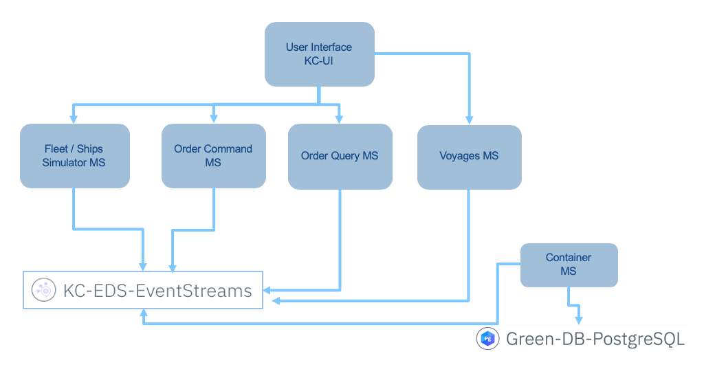

IKS Deployment
In this document, you will learn how to deploy different microservices as part of the solution into IBM Cloud Kubernetes services, how to use IBM Event Streams and postgresql on IBM Cloud while running the solution locally, or only some services locally. First you need to configure the needed services.
Prepare IBM Cloud Services to run the solution
IBM Cloud offers a set of services to run part of your event driven solution. We are using the following services:
- Kubernetes Service
- Streaming Analytics Service - As of now it is optional.
- Event Streams
- And if you want to use the container microservice with springboot and postgresql, you need postgresql
At the high level the deployed solution on IKS, will look like in the following figure:

At least five microservices will be deployed (six if the container manager microservice is deployed) and three services created. You do not need to deploy Streaming Analytics service as it is still under construction.
Here is a dependency graph:

Pre-requisites
- Create an account on IBM Cloud.
- Install the following CLIs:
- Docker CLI
- IBM Cloud CLI
- Kubernetes CLI
- IBM Cloud Kubernetes Service plug-in using the following command:
ibmcloud plugin install container-service -r Bluemix
- Install IBM Cloud Container Registry CLI plug-in, using the command:
ibmcloud plugin install container-registry -r Bluemix
The following diagram illustrates the command lines interface and how they interact with IBM Cloud components:

Each helm chart to deploy each component of the solution uses the private repository like: us.icr.io/ibmcaseeda/. As it is recommended to use your own private image repository, we are presenting a quick summary of what to do to define your own private registry in the next section.
Define an image private repository
Use the docker container image private registry to push your images and then deploy them to IBM Kubernetes Service. When deploying enterprise application it is strongly recommended to use private registry to protect your images from being used and changed by unauthorized users. Private registries must be set up by the cluster administrator to ensure that the credentials to access the private registry are available to the cluster users.
In the IBM Cloud Catalog, use the Containers category and Container Registry tile. Create the repository with the create button. You can share a repository between multi IKS clusters within the same region.
Once you access your registry, create a namespace for your solution. We used ibmcaseeda name.
*The namespace can also be created with the command:
ibmcloud cr namespace-add ibmcaseeda
Here is a screen shot of the created image repository:

We will use this namespace when tagging the docker images for our microservices. Here is an example of tagging:
docker tag ibmcase/kc-ui us.icr.io/ibmcaseeda/kc-ui:latest
To see the images in your private registry you can use the user interface at https://cloud.ibm.com/containers-kubernetes/registry/main/private or the command:
ibmcloud cr image-list
But first let add a kubernetes cluster.
Kubernetes Cluster Service
If you need to know more about kubernetes, read the basic concepts here.
To create the cluster follow this tutorial.
Here is an image of our cluster, with three nodes and the smallest possible configuration:

To access to the cluster use the following commands:
- Login to IBM Cloud. Do not need to be done each time.
ibmcloud login -a https://api.us-east.bluemix.net
- Target the IBM Cloud Container Service region in which you want to work.
ibmcloud ks region-set us-east
- You may need to update the CLI, as it changes quite often
ibmcloud plugin update container-service
- Set the KUBECONFIG environment variable.
export KUBECONFIG=/Users/$USER/.bluemix/plugins/container-service/clusters/fabio-wdc-07/kube-config-wdc07-fabio-wdc-07.yml
- Verify you have access to your cluster by listing the node:
kubectl get nodes
To set the cluster config to your cluster use:
ibmcloud ks cluster-config <cluster_name_or_ID>
As it is recommended to ilosate your deployment from kubernetes default setting, create a namespace that can be the same as the container registry namespace name or something else. Below we create the browncompute namespace:
kubectl create namespace browncompute
Event Streams Service on IBM Cloud
To provision your service, go to the IBM Cloud Catalog and search for Event Streams. It is in the Integration category. Create the service and specify a name, a region, and a space.
- In the service credentials create new credentials to get the Kafka broker list, the admim URL and the api_key needed to authenticate the consumers or producers.

We will use a kubernetes secret to define the api key (see detail in this section)
- In the Manage panel add the topics needed for the solution. We need at least the following:

Streaming Analytics Service
This service is only need when doing real time analytics with Streaming analytics service.
The documentation located here describes how to configure the IBM Cloud based Streaming Analytics Service and how to build/deploy the example application.
The postgresql service
The container manager microservice persists the Reefer container inventory in postgresql. To install the service follow the product documentation here.
If you do not plan to use this container manager service you do not need to create a Postgresql service.
Run the solution on IBM Cloud Kubernetes Services
Event stream API key
The Event streams broker API key is needed to connect any deployed consumers or producers within kubernetes cluster to access the service in IBM Cloud. To avoid sharing security keys, we propose to define a kubernetes secret and deploy it to the IKS cluster.
- Define a Event Stream API key secret: to use Event Streams, we need to get the API key and configure a secret under the
browncomputenamespace.
kubectl create secret generic eventstreams-apikey --from-literal=binding='<replace with api key>' -n browncompute
- Verify the secrets:
kubectl describe secrets -n browncompute
This secret is used by all the solution microservices which are using Kafka / Event Streams. The detail of how we use it with environment variables, is described in one of the project here.
Postgresql URL, User, PWD and CA certificate as secrets
Applying the same approach as above, copy the Postgresql URL as defined in the Postegresql service credential and execute the following command:
kubectl create secret generic postgresql-url --from-literal=binding='<replace with postgresql-url>' -n browncompute
For the user:
kubectl create secret generic postgresql-user --from-literal=binding='ibm_cloud_c...' -n browncompute
For the user password:
kubectl create secret generic postgresql-pwd --from-literal=binding='<password from the service credential>.' -n browncompute
For the SSL certificate:
- Get the certificate using the name of the postgresql service:
ibmcloud cdb deployment-cacert $IC_POSTGRES_SERV > postgresql.crt
- Then add it into an environment variable
export POSTGRESQL_CA_PEM="$(cat ./postgresql.crt)"
- Then define a secret:
kubectl
create secret generic postgresql-ca-pem --from-literal=binding="$POSTGRESQL_CA_PEM" -n browncompute
Now those variables and secrets are used in the deployment.yml file of the service that needs them. Like the Springboot container microservice. Here is an example of such settings:
Private Registry Token
Each helm chart specifies the name of the docker image to load to create the containers / pods. The image name is from a private repository. To let kubernetes scheduler being able to access the registry, we need to define a secret to hold the security token. Here is an extract of a deployment yaml file referencing the browncompute-registry-secret secret.
spec:
imagePullSecrets:
- name: browncompute-registry-secret
containers:
- name: "kc-ui"
image: "us.icr.io/ibmcaseeda/kc-ui:latest"
imagePullPolicy: Always
Using secret is also mandatory when registry and clusters are not in the same region.
- Verify current secrets for a give namespace
kubectl describe secrets -n browncompute
- Get a security token: you can use permanent or renewable one:
ibmcloud cr token-add --description "private registry secret for browncompute" --non-expiring -q
- To list the token use the command
ibmcloud cr tokens
The result:
TOKEN ID READONLY EXPIRY DESCRIPTION
2b5ff00e-a.. true 0 token for somebody 3dbf72eb-6.. true 0 private registry secret for browncompute
- To get the token for a given token identifier
ibmcloud cr token-get cce5a800-...
- Define the secret to store the Event stream API key token information:
kubectl --namespace browncompute create secret docker-registry
browncompute-registry-secret --docker-server=<registry_url> --docker-username=token --docker-password=<token_value> --docker-email=<docker_email>
- Verify the secret
kubectl get secrets -n browncompute
You will see something like below.
NAME TYPE DATA AGE browncompute-registry-secret kubernetes.io/dockerconfigjson 1 2m default-token-ggwl2 kubernetes.io/service-account-token 3 41m eventstreams-apikey Opaque 1 24m
Now for each microservice as part of the solution, we have defined helm chart and a script (deployHelm) to deploy to IKS.
This step is done one time only. See also the product documentation for more detail.
Push images
The following steps are done each time you want to deploy the solution to IKS. When using continuous deployment, these steps will be automated.
If you are not connected to IBM Cloud, do the following:
ibmcloud login -a https://api.us-east.bluemix.net
- Target the IBM Cloud Container Service region in which you want to work.
ibmcloud ks region-set us-east
- Set the KUBECONFIG environment variable.
ibmcloud ks cluster-config fabio-wdc-07
export KUBECONFIG=/Users/$USER/.bluemix/plugins/container-service/clusters/fabio-wdc-07/kube-config-wdc07-fabio-wdc-07.yml
- Verify you have access to your cluster by listing the node:
kubectl get nodes
- login to the container registry
ibmcloud cr login
Then execute the script: ./scripts/pushToPrivate to deploy all component, or go to each repository and use the script deployHelm.
- Verify the images are in you private repo:
ibmcloud cr image-list
- Deploy the helm charts for each components using the
scripts/deployHelms. - Verify the deployments and pods:
kubectl get deployments -n browncompute
NAME DESIRED CURRENT UP-TO-DATE AVAILABLE AGE fleetms-deployment 1 1 1 1 23h kc-ui 1 1 1 1 18h ordercommandms-deployment 1 1 1 1 1d orderqueryms-deployment 1 1 1 1 23h voyagesms-deployment 1 1 1 1 19h
kubectl get pods -n browncompute
NAME READY STATUS RESTARTS AGE fleetms-deployment-564698b998-7pb2n 1/1 Running 0 23h kc-ui-749d7df9db-jl6tv 1/1 Running 0 14h ordercommandms-deployment-d6dc4fdc7-5wjtp 1/1 Running 0 1d orderqueryms-deployment-5db96455f-6fqp5 1/1 Running 0 23h voyagesms-deployment-6d7f8cdc8d-hnvq6 1/1 Running 0 19h
- You can perform a smoke test with the
scripts/smokeTestsIKSor you can try to access some of the read APIs using the web browser. So first to get the public IP address of your cluster, go to theWorker Nodesview of the Clusters console. Then to get the service exposed NodePort usekubectl get services -n browncomputeand then get the port number mapped from one of the exposed ports (9080, 3010, 3000...): - fleetms: here is an example of URL : http://Public IP:31300/fleetms/fleets
- UI: http://Public IP:31010/
- Access the kubernetes console from your IKS deployment to see the deployment